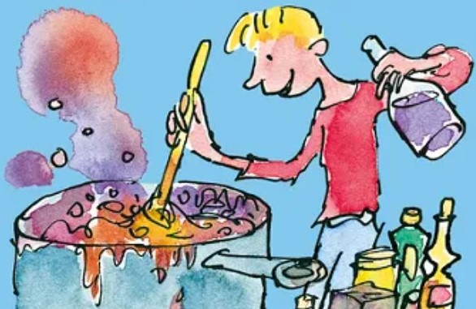

disaster

how the disaster looks like once it's truly formed. image credits: tvtropes.org
description
this is a recipe for disaster. get it? explaining anything else will ruin the joke.
ingredients
- george
- his grandmother
- paint
- animal pills
- and a bunch of other random stuff
steps
- leave george alone with his horrible grandmother.
- wait for george to do the miracles.
- bam. you will get something (though i am not quite sure what).